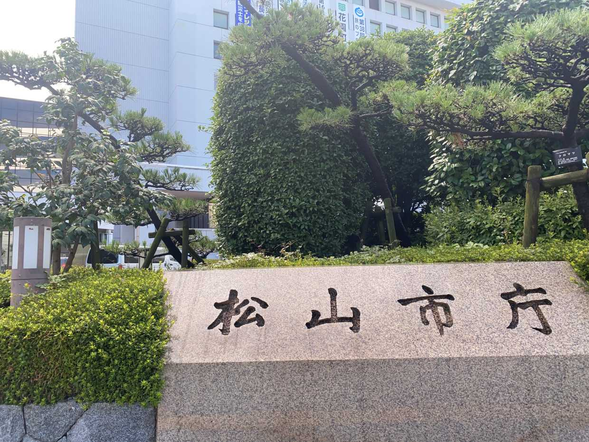
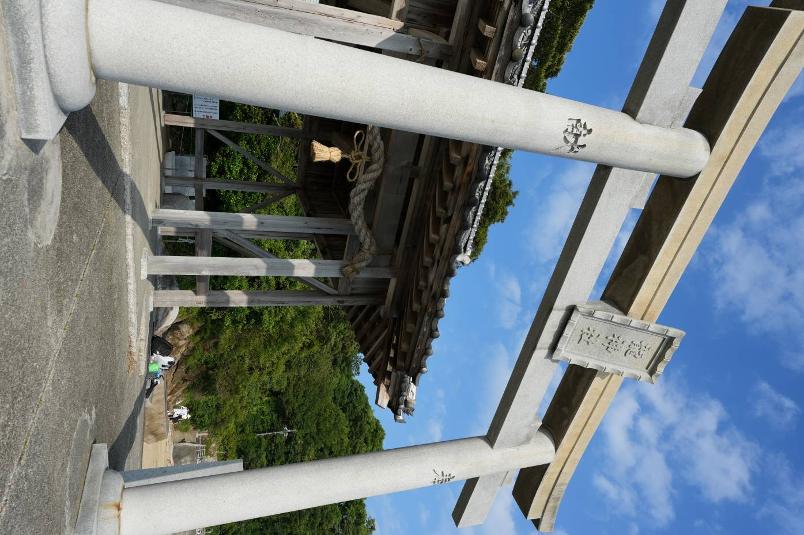

愛媛県松山市
役場

白石龍神社

松山市は愛媛県の県庁所在地でかなり栄えています。銀天街の土曜夜祭に偶然遭遇しましたが人でにぎわっており楽しめます。松山城周辺は観光にちょうど良く雰囲気も良いです。有名な道後温泉は通り過ぎただけですが観光客でにぎわっていました。


松山市は愛媛県の県庁所在地でかなり栄えています。銀天街の土曜夜祭に偶然遭遇しましたが人でにぎわっており楽しめます。松山城周辺は観光にちょうど良く雰囲気も良いです。有名な道後温泉は通り過ぎただけですが観光客でにぎわっていました。